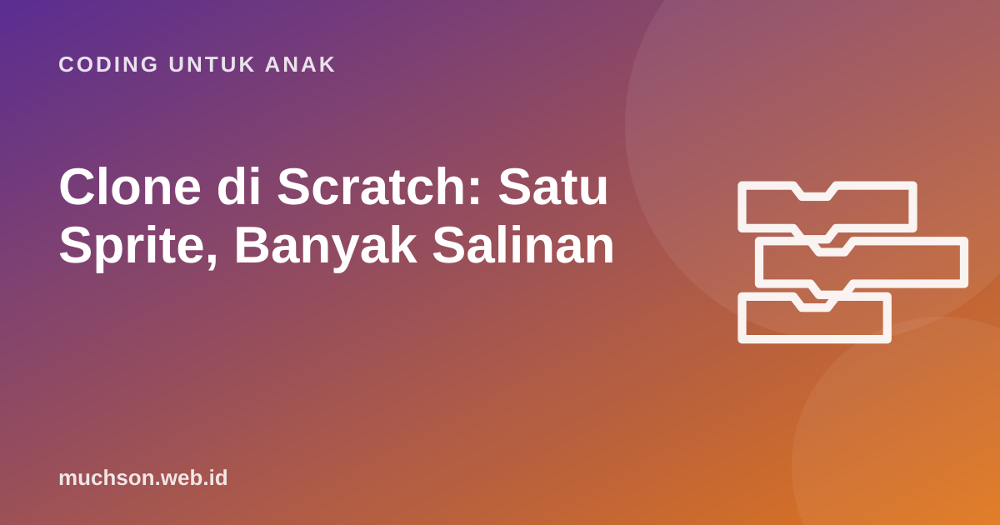

Beranda › Artikel › Coding untuk Anak
Coding untuk AnakClone di Scratch: Satu Sprite, Banyak Salinan
Bayangkan game dengan 30 meteor jatuh. Membuat 30 sprite meteor dengan skrip yang sama akan sangat merepotkan, dan mengubah satu hal berarti mengubah 30 tempat. Clone menyelesaikan masalah ini: satu sprite menjadi cetakan, lalu salinannya dibuat sebanyak yang dibutuhkan selama program berjalan. Konsep ini juga pengantar ke ide penting pemrograman: kelas dan objek.

Analogi cetakan kue
Cetakan kue berbentuk bintang dipakai untuk membuat banyak kue. Semua kue punya bentuk yang sama, tetapi masing-masing bisa diberi topping berbeda dan diletakkan di tempat berbeda. Di Scratch, sprite asli adalah cetakannya, dan setiap clone adalah kuenya. Clone mewarisi kostum, ukuran, dan skrip dari sprite asli, tetapi bisa berada di posisi berbeda dan bergerak sendiri-sendiri.
Dalam pemrograman profesional, "cetakan" disebut kelas (class) dan "kue" disebut objek. Anak yang paham clone sudah memegang intuisi pemrograman berorientasi objek.
Tiga blok clone
| Blok | Fungsi |
|---|---|
| buat klon dari [diriku] | Membuat salinan baru dari sprite ini (atau sprite lain) |
| ketika aku mulai sebagai klon | Skrip yang hanya dijalankan oleh clone saat ia lahir |
| hapus klon ini | Menghapus clone, misalnya saat keluar layar atau tertangkap |
Ketiganya ada di kategori Kontrol. Pola yang hampir selalu dipakai: sprite asli disembunyikan dan bertugas membuat clone; setiap clone menampilkan diri, bergerak, lalu menghapus dirinya sendiri.
Contoh 1: hujan meteor
Perhatikan bahwa hanya ada satu sprite meteor dengan dua skrip, tetapi di layar bisa ada belasan meteor bersamaan. Ingin semua meteor lebih cepat? Ubah satu angka, −6 menjadi −10. Inilah kekuatan clone.
Contoh 2: kembang api
Variabel lokal: setiap clone punya miliknya sendiri
Saat membuat variabel, Scratch menawarkan dua pilihan: untuk semua sprite (global) atau untuk sprite ini saja (lokal). Untuk clone, perbedaannya penting. Variabel lokal "kecepatan" membuat setiap meteor bisa punya kecepatannya sendiri, sedangkan variabel global "skor" dibagi bersama oleh semua.
| Jenis | Contoh | Dipakai untuk |
|---|---|---|
| Global (semua sprite) | skor, nyawa, level | Nilai yang sama untuk seluruh game |
| Lokal (sprite ini saja) | kecepatan, nomor, darah musuh | Nilai yang berbeda untuk setiap clone |
Batas clone dan kebiasaan yang baik
Scratch membatasi jumlah clone yang ada bersamaan (300 clone). Bila batas tercapai, blok "buat klon" diabaikan. Kalau game tiba-tiba "berhenti membuat musuh", kemungkinan besar ada clone yang tidak pernah dihapus dan menumpuk di luar layar.
Bug clone yang sering terjadi
Clone biasanya diajarkan di bagian akhir kurikulum coding anak karena menggabungkan semua konsep sebelumnya: loop, kondisi, koordinat, acak, dan variabel. Bila anak sudah sampai di sini, ia siap membuat game yang terasa seperti game sungguhan. Di PixelKode, clone menjadi modul ke-6 sebelum proyek kelulusan.
Tanya jawab
Apa itu clone di Scratch?
Berapa batas clone di Scratch?
Apa beda variabel global dan lokal?
Kapan anak siap belajar clone?
Sumber dan bacaan lanjut
- Scratch untuk pendidik
- Scratch: buat proyek baru
- Brennan & Resnick (2012). Kerangka berpikir komputasional